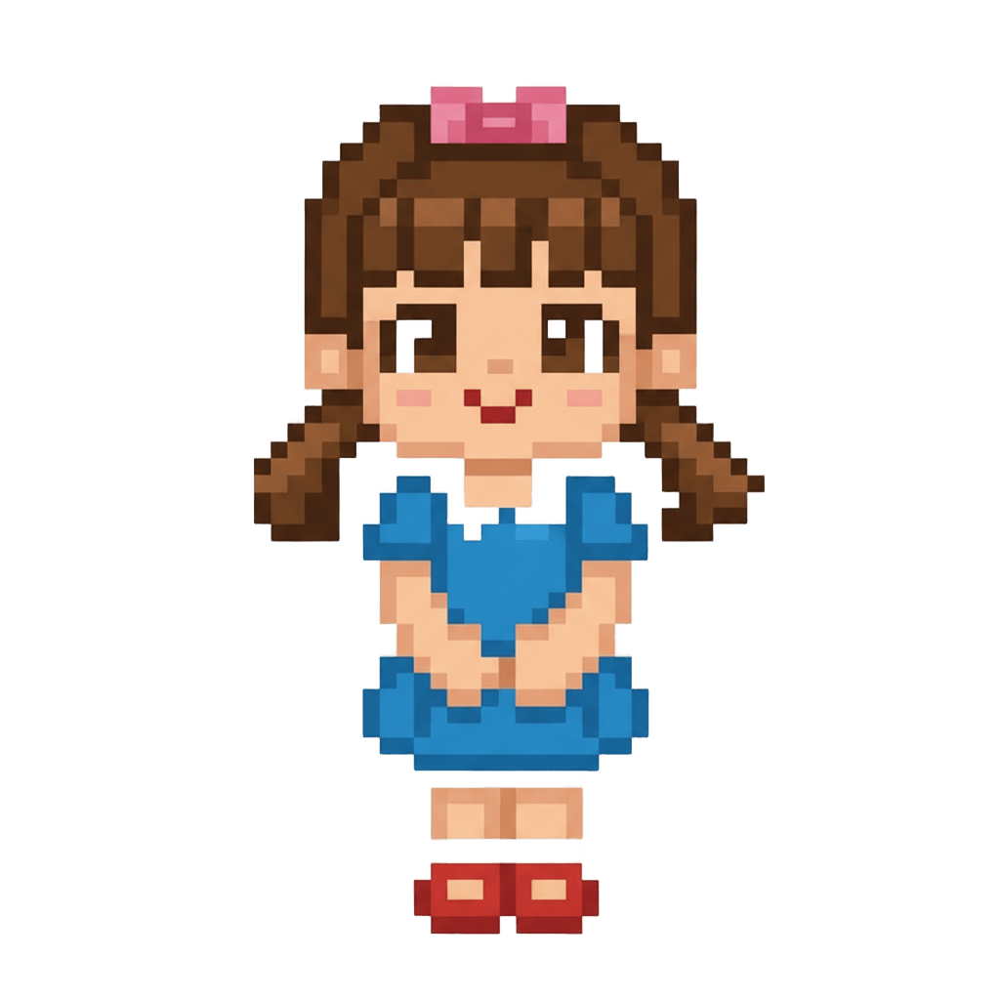

EL VIENTO SOLAR (Cuando el viento solar es FUERTE, crea auroras visibles)
Carla es una muchachita alegre y entusiasta de la naturaleza, que vive en la Patagonia, Argentina.
También es aficionada a la astronomía. Ella toma clases de fotografía en su colegio y como tarea, ella puede fotografiar lo que guste.
Ella quiere combinar sus pasiones por lo que para ello, toma su abrigo y monta su carpa fuera de casa, esperando que ocurra el suceso.
Está ansiosa de capturar con su cámara, a una aurora austral. Pero no está segura de que hoy vaya a pasar.
Su madre quiere saber si puede irse a dormir o puede desvelarse para contemplar el fenómeno.
¿Según la información dada, esta noche aparecerá una aurora austral?
¿Debería la madre de Carla mandarla a dormir?
¡INCREÍBLE DECISIÓN! Carla capturó auroras que bailaban en el cielo. Fue una noche espléndida. Su mamá te manda las gracias con un abrazo.
¡OPORTUNIDAD PERDIDA! 😴 "¡Rayos y centellas! Carla se quedó en casa durmiendo, soñando con Auroras en lugar de fotografiarlas. Esperemos que la próxima no se las pierda